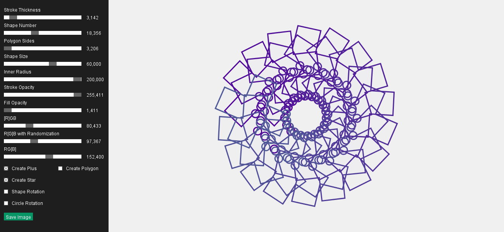
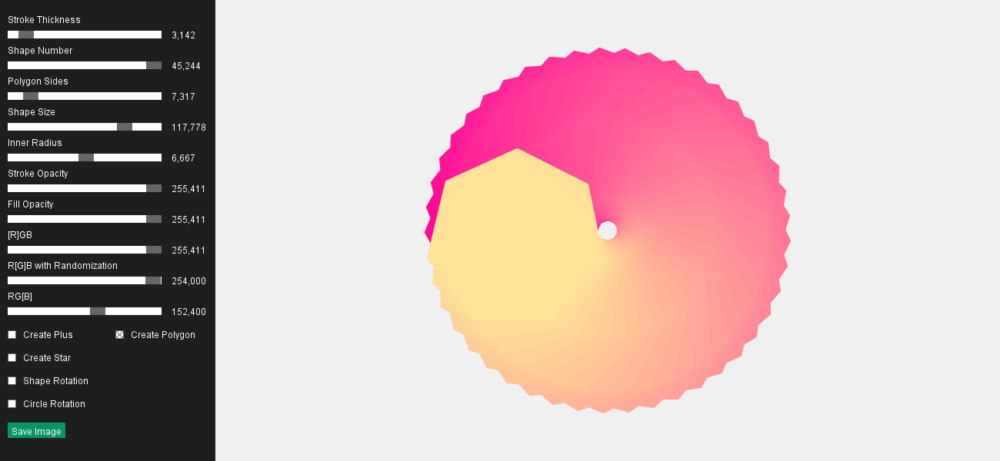
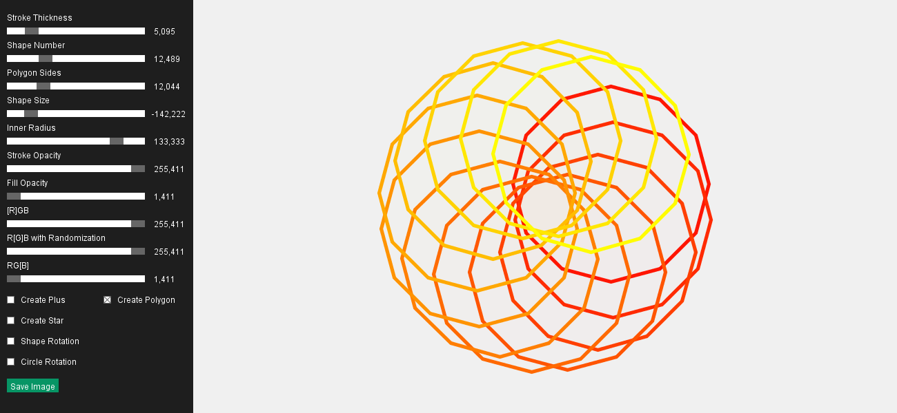
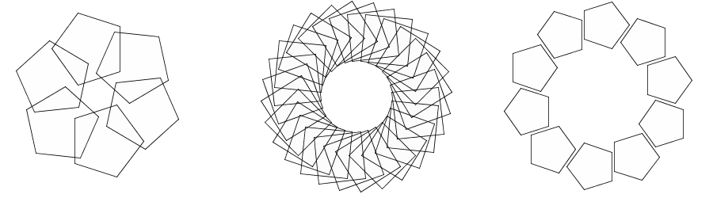

Processing: Trigonometric Functions



This program used trigonometric functions to create a single polygon. On the left side it’s possible to select between different shapes, corners, numbers and sizes. A polygon is copied and ordered around another circle. Some further examples:

With my grandpa I used to play with a spirograph. Although it is not identical it’s quite similar.
Ressources: